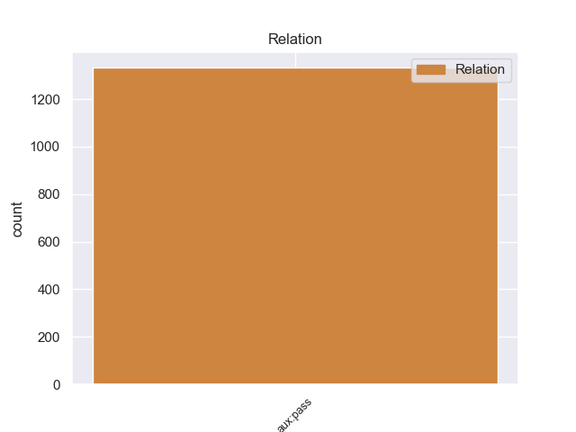
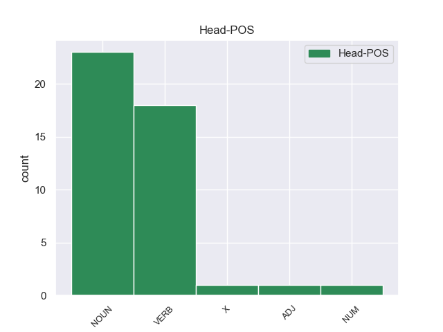
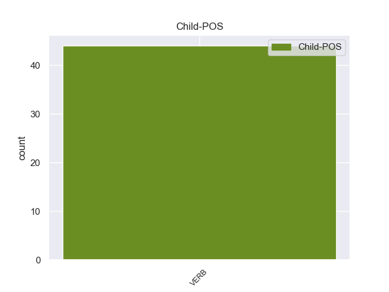

Distribution of features within this leaf



non-conforming Examples:
1 Este _ _ _ _ 0 _ _ _
2 túnel _ _ _ _ 0 _ _ _
3 , _ _ _ _ 0 _ _ _
4 a _ _ _ _ 0 _ _ _
5 el _ _ _ _ 0 _ _ _
6 que _ _ _ _ 0 _ _ _
7 se _ _ _ _ 0 _ _ _
8 le _ _ _ _ 0 _ _ _
9 dio _ _ _ _ 0 _ _ _
10 el _ _ _ _ 0 _ _ _
11 nombre _ _ _ _ 0 _ _ _
12 de _ _ _ _ 0 _ _ _
13 forulum _ _ _ _ 0 _ _ _
14 después _ _ _ _ 0 _ _ _
15 Fur _ _ _ _ 0 _ _ _
16 lo _ _ _ _ 0 _ _ _
17 ( _ _ _ _ 0 _ _ _
18 es ser VERB _ Mood=Ind|Number=Sing|Person=3|Tense=Pres|VerbForm=Fin 23 cc _ _
19 decir _ _ _ _ 0 _ _ _
20 , _ _ _ _ 0 _ _ _
21 el _ _ _ _ 0 _ _ _
22 " _ _ _ _ 0 _ _ _
23 agujero agujero NOUN _ Gender=Masc|Number=Sing 0 _ _ _
24 " _ _ _ _ 0 _ _ _
25 ) _ _ _ _ 0 _ _ _
26 es _ _ _ _ 0 _ _ _
27 uno _ _ _ _ 0 _ _ _
28 de _ _ _ _ 0 _ _ _
29 los _ _ _ _ 0 _ _ _
30 pocos _ _ _ _ 0 _ _ _
31 túneles _ _ _ _ 0 _ _ _
32 de _ _ _ _ 0 _ _ _
33 calzada _ _ _ _ 0 _ _ _
34 romana _ _ _ _ 0 _ _ _
35 que _ _ _ _ 0 _ _ _
36 han _ _ _ _ 0 _ _ _
37 llegado _ _ _ _ 0 _ _ _
38 hasta _ _ _ _ 0 _ _ _
39 nosotros _ _ _ _ 0 _ _ _
40 . _ _ _ _ 0 _ _ _
1 Me _ _ _ _ 0 _ _ _
2 gusta _ _ _ _ 0 _ _ _
3 bien _ _ _ _ 0 _ _ _
4 seco _ _ _ _ 0 _ _ _
5 , _ _ _ _ 0 _ _ _
6 es ser VERB _ Mood=Ind|Number=Sing|Person=3|Tense=Pres|VerbForm=Fin 11 cc _ _
7 decir _ _ _ _ 0 _ _ _
8 , _ _ _ _ 0 _ _ _
9 con _ _ _ _ 0 _ _ _
10 la _ _ _ _ 0 _ _ _
11 mención mención NOUN _ Gender=Fem|Number=Sing 0 _ _ _
12 " _ _ _ _ 0 _ _ _
13 brut _ _ _ _ 0 _ _ _
14 " _ _ _ _ 0 _ _ _
15 - _ _ _ _ 0 _ _ _
16 mientras _ _ _ _ 0 _ _ _
17 nos _ _ _ _ 0 _ _ _
18 dejen _ _ _ _ 0 _ _ _
19 poner _ _ _ _ 0 _ _ _
20 la _ _ _ _ 0 _ _ _
21 los _ _ _ _ 0 _ _ _
22 franceses _ _ _ _ 0 _ _ _
23 , _ _ _ _ 0 _ _ _
24 claro _ _ _ _ 0 _ _ _
25 - _ _ _ _ 0 _ _ _
26 , _ _ _ _ 0 _ _ _
27 y _ _ _ _ 0 _ _ _
28 bien _ _ _ _ 0 _ _ _
29 frío _ _ _ _ 0 _ _ _
30 . _ _ _ _ 0 _ _ _
1 Es ser VERB _ Mood=Ind|Number=Sing|Person=3|Tense=Pres|VerbForm=Fin 6 cc _ _
2 decir _ _ _ _ 0 _ _ _
3 el _ _ _ _ 0 _ _ _
4 canal _ _ _ _ 0 _ _ _
5 principal _ _ _ _ 0 _ _ _
6 continúa continuar VERB _ Mood=Ind|Number=Sing|Person=3|Tense=Pres|VerbForm=Fin 0 _ _ _
7 doblando _ _ _ _ 0 _ _ _
8 o _ _ _ _ 0 _ _ _
9 cayendo _ _ _ _ 0 _ _ _
10 a _ _ _ _ 0 _ _ _
11 la _ _ _ _ 0 _ _ _
12 izquierda _ _ _ _ 0 _ _ _
13 ó _ _ _ _ 0 _ _ _
14 babor _ _ _ _ 0 _ _ _
15 . _ _ _ _ 0 _ _ _
1 La _ _ _ _ 0 _ _ _
2 economía _ _ _ _ 0 _ _ _
3 de _ _ _ _ 0 _ _ _
4 Irán _ _ _ _ 0 _ _ _
5 es _ _ _ _ 0 _ _ _
6 una _ _ _ _ 0 _ _ _
7 economía _ _ _ _ 0 _ _ _
8 de _ _ _ _ 0 _ _ _
9 transición _ _ _ _ 0 _ _ _
10 donde _ _ _ _ 0 _ _ _
11 un _ _ _ _ 0 _ _ _
12 crecimiento _ _ _ _ 0 _ _ _
13 continuo _ _ _ _ 0 _ _ _
14 elevado _ _ _ _ 0 _ _ _
15 de _ _ _ _ 0 _ _ _
16 la _ _ _ _ 0 _ _ _
17 fuerza _ _ _ _ 0 _ _ _
18 laboral _ _ _ _ 0 _ _ _
19 no _ _ _ _ 0 _ _ _
20 lleva _ _ _ _ 0 _ _ _
21 emparejado _ _ _ _ 0 _ _ _
22 un _ _ _ _ 0 _ _ _
23 crecimiento _ _ _ _ 0 _ _ _
24 económico _ _ _ _ 0 _ _ _
25 real _ _ _ _ 0 _ _ _
26 lo _ _ _ _ 0 _ _ _
27 que _ _ _ _ 0 _ _ _
28 lleva llevar VERB _ Mood=Ind|Number=Sing|Person=3|Tense=Pres|VerbForm=Fin 31 cc _ _
29 a _ _ _ _ 0 _ _ _
30 un _ _ _ _ 0 _ _ _
31 nivel nivel NOUN _ Gender=Masc|Number=Sing 0 _ _ _
32 de _ _ _ _ 0 _ _ _
33 desempleo _ _ _ _ 0 _ _ _
34 considerablemente _ _ _ _ 0 _ _ _
35 más _ _ _ _ 0 _ _ _
36 alto _ _ _ _ 0 _ _ _
37 que _ _ _ _ 0 _ _ _
38 las _ _ _ _ 0 _ _ _
39 estimaciones _ _ _ _ 0 _ _ _
40 oficiales _ _ _ _ 0 _ _ _
41 de _ _ _ _ 0 _ _ _
42 el _ _ _ _ 0 _ _ _
43 11 _ _ _ _ 0 _ _ _
44 % _ _ _ _ 0 _ _ _
45 . _ _ _ _ 0 _ _ _
1 La _ _ _ _ 0 _ _ _
2 iniciativa _ _ _ _ 0 _ _ _
3 de _ _ _ _ 0 _ _ _
4 la _ _ _ _ 0 _ _ _
5 diputada _ _ _ _ 0 _ _ _
6 de _ _ _ _ 0 _ _ _
7 la _ _ _ _ 0 _ _ _
8 coalición _ _ _ _ 0 _ _ _
9 cívica _ _ _ _ 0 _ _ _
10 , _ _ _ _ 0 _ _ _
11 Adriana _ _ _ _ 0 _ _ _
12 montes _ _ _ _ 0 _ _ _
13 , _ _ _ _ 0 _ _ _
14 específica _ _ _ _ 0 _ _ _
15 que _ _ _ _ 0 _ _ _
16 los _ _ _ _ 0 _ _ _
17 celíacos _ _ _ _ 0 _ _ _
18 deben _ _ _ _ 0 _ _ _
19 consumir _ _ _ _ 0 _ _ _
20 productos _ _ _ _ 0 _ _ _
21 libres _ _ _ _ 0 _ _ _
22 de _ _ _ _ 0 _ _ _
23 gluten _ _ _ _ 0 _ _ _
24 y _ _ _ _ 0 _ _ _
25 que _ _ _ _ 0 _ _ _
26 por _ _ _ _ 0 _ _ _
27 eso _ _ _ _ 0 _ _ _
28 es _ _ _ _ 0 _ _ _
29 de _ _ _ _ 0 _ _ _
30 " _ _ _ _ 0 _ _ _
31 suma _ _ _ _ 0 _ _ _
32 importancia _ _ _ _ 0 _ _ _
33 que _ _ _ _ 0 _ _ _
34 los _ _ _ _ 0 _ _ _
35 supermercados _ _ _ _ 0 _ _ _
36 e _ _ _ _ 0 _ _ _
37 hipermercados _ _ _ _ 0 _ _ _
38 tengan _ _ _ _ 0 _ _ _
39 una _ _ _ _ 0 _ _ _
40 góndola _ _ _ _ 0 _ _ _
41 especial _ _ _ _ 0 _ _ _
42 donde _ _ _ _ 0 _ _ _
43 se _ _ _ _ 0 _ _ _
44 exhiban _ _ _ _ 0 _ _ _
45 los _ _ _ _ 0 _ _ _
46 productos _ _ _ _ 0 _ _ _
47 sin _ _ _ _ 0 _ _ _
48 TACC _ _ _ _ 0 _ _ _
49 es ser VERB _ Mood=Ind|Number=Sing|Person=3|Tense=Pres|VerbForm=Fin 51 cc _ _
50 decir _ _ _ _ 0 _ _ _
51 trigo trigo NOUN _ Gender=Masc|Number=Sing 0 _ _ _
52 , _ _ _ _ 0 _ _ _
53 avena _ _ _ _ 0 _ _ _
54 , _ _ _ _ 0 _ _ _
55 cebada _ _ _ _ 0 _ _ _
56 y _ _ _ _ 0 _ _ _
57 centeno _ _ _ _ 0 _ _ _
58 " _ _ _ _ 0 _ _ _
59 . _ _ _ _ 0 _ _ _